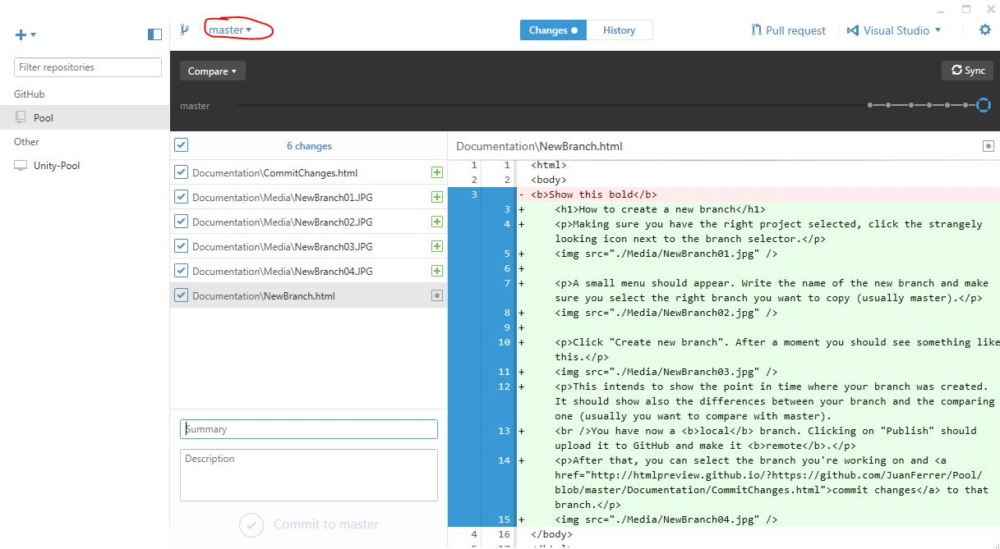
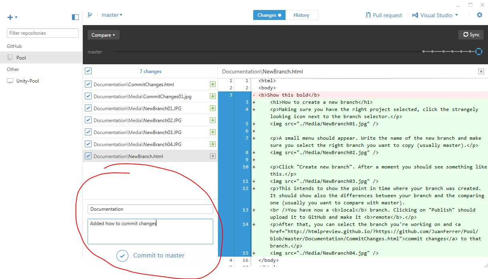
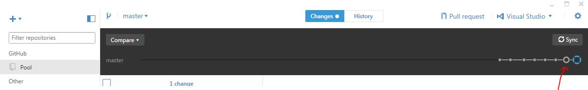
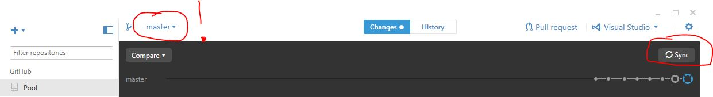

Make sure you have the right branch selected (it usually will not be master, but your dev branch).
As you can see, a preview of the changes you have made since last update can be seen.
Add a short summary and a description of the changes you made And click "commit to [branch name]"
After a short wait, you should see a new ball/checkpoint appear in the timeline. This is the change you've made to your local branch. If you check on GitHub, the changes will not yet show on your branch.
This is because you need to upload it to the remote branch. It is done by clicking "Sync". I can't say this enough, make sure you have the right branch selected (usually not master, but your dev branch.).
Once you've done that, your changes will be available on your branch for everyone to see.